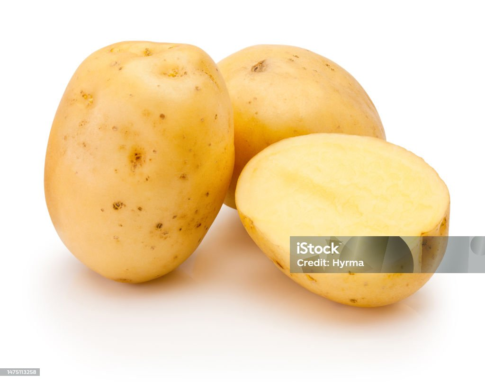

Potato is one of the world’s most widely consumed vegetables,
known for its mild flavor and versatility in cooking. It originated
in the Andean region of South America, mainly in present-day Peru
and Bolivia, where it was first cultivated thousands of years
ago by ancient civilizations. Spanish explorers later introduced
potatoes to Europe, and from there they spread across the world,
becoming a major food crop. Nutritionally, potatoes are rich in
carbohydrates, making them a strong source of energy. They also
contain vitamin C, potassium, fiber, and vitamin B6. These nutrients
support immunity, heart health, digestion, and overall wellness,
making potatoes a valuable staple food.